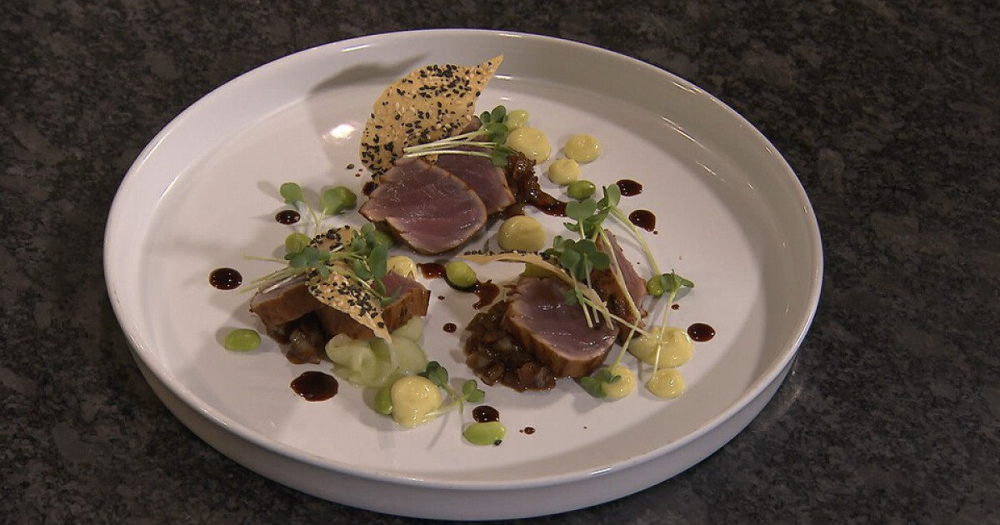

Tuna-Tataki

Description
Today we make tataki from tuna. Tataki sounds like an ingredient,
but it's not. It's a way of cooking from Japanese kitchen where
meat or fish is served almost raw. This can only be achieved with
fresh meat or fish that is suitable for raw consumption. The tataki
of tuna comes with wasabi-mayonaise, sweet-sour cucumber rolls, Eastern vinaigrette
and sweet Eastern onions.
Preperation time: 30-45 minutes
Ingredients
- Tuna 320gr
- Soy Sauce 100ml
- Oyster Sauce 100 ml
- Ginger Sauce 100 ml
- Fish Sauce 100 ml
- Ginger 1 slice
- Garlic 2
- Potato Starch
- Mayonaise 150gr
- Wasabi 1ts
- Cucumber 1
- Sugar 100g
- Water 150ml
- Vinegar 150ml
- Onions 2
- Liquid of Tuna poach 4 spoons
- Oil
- Soy-Beans
- Green Cress
Steps
- Cut tuna in beams.
- Clean the garlic and cut in half. Put
the garlic together with the Soy-Sauce, Oyster-Sauce
Ginger-Sauce, Fish-Sauce and ginger slice in a cooking pot
and cook it.
- Now put the beams of tuna in the pot and poach the tuna
on all sides for about ten seconds. Get the tuna out and let it cool.
- The remainder of the liquid needs to be thickened with the potato starch.
- When the tuna is cooled enough you cut them in slices.
Then you make the wasabi-mayonaise by mixing the wasabi and mayonaise.
Put the mix together in a piping bag.
- For the sweet-sour cucumber you cut long slices with a peeler
- Mix the water, vinegar and sugar together and put the cucumber in it.
- Cut the onions in small pieces, frie them short in oil and add some spoons
of the poached liquid to the onions turn down the fire. it is ready when
the liquid is gone.
- Now make the plate up like the picture or be creative!